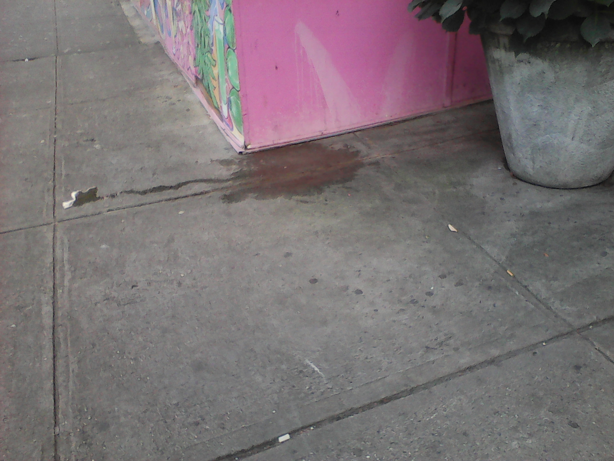

There are some things that most of us take for granted. Trees and plants are some of those things, especially within the city. We are not always mindful of what we are doing, most of the time. Below, are a few examples of this.
What this is about, in a nutshell, is something referred to as mindfulness, or lack thereof. In many cases, people are mindful of their surroundings, but it's not always the case. I will elaborate in the examples below.
What most of us know, is that when you gotta go, you gotta go. The same can be said about every animal, especially dogs. We do know that when a dog is prepared to relieve itself, it will position itself depending on what it wants to do. In many instances, dogs will find lengthy structures to urinate on, like fire hydrants and lamp posts. I've seen them do the same on trees, and sometimes flower beds.
Simplest statement, moving forward...
...and do so away from trees and plants (preferrably in the gutters).
There are reasons for that. For starters, pavements are not always level or flat. Something as simple as pouring water, or any other type of liquid onto the pavement, it won't exactly stay in one place as a puddle. It will eventually run in one direction or another. If a tree is planted within that area, and a dog relieves itself away from the tree, it may still end up going towards the same tree. People have had remedies for preventing such issues, but the best one is to just have the dogs do their business in the gutter, or somewhere far from trees, plants, and flower beds.
Waste in general is bad for plants. With the exception of what is used for fertilizer (horse/cow manure), there really shouldn't be anything that is left behind at the roots of a tree, whether it's liquid or solid.
Most people don't even realize that they do this when they walk their dogs. Many don't think much of it, unless it's happening to them on their property, in their neighborhood. They do have instances where people confront dog walkers that don't curb their dogs, and leave their business on their property.
A certain focus should be kept when walking your dog(s) or someone else's. We do know that there are penalties in some areas for not curbing dogs, but it's not enforced all of the time.
When most people get rid of garbage outside of the home, it's normally tossed in a garbage can. Some people don't always find it convenient to do so. This results in them tossing their trash almost anywhere. It can vary from something as simple as someone dropping a piece of food, or an item falling out of their pocket. In some cases, it's deliberate, which is where most people take the trees for granted; believing nothing will come from their actions.
I'm not just discussing simple littering, I'm also talking about bringing garbage from home or local businesses, and leaving it outside for sanitation to pick up. Many times, it's placed on the curb, where most city trees are planted.
Garbage bags can be punctured at anytime, by anything. Sometimes, they have liquids that can drain out of the nearest hole, especially if that hole is at the bottom. Also, when people recycle cans and bottles, they tend to empty them in not necessarily the gutters, but on nearby tree roots and some flower beds.
Prior to the initiative to put trees and plants on the curbs in the city, people placed their inside garbage outside by the curb for garbage pickup. The trees, plants, and flower beds in some ways appear to be in the way of a normal day-to-day activity. We do know that garbage cans and recycling bins are available for purchase, and proper placement of them is key. There are many simple ways to improve the situation, and much of it isn't always about people understanding to place their garbage far from trees, plants, and flower beds. If garbage pickup isn't as frequent as some would hope, the garbage will still pile up, and a few bags can become a few dozen in a matter of moments. This can result in bags normally piled up three yards away, can end up with much more piled up between three feet or three inches away from the nearest tree, plant, or flower bed.
Oh, and as far as dogs doing their business, they'll do it on or near garbage bags as well. That's another reason to place the bags as far as possible from trees, plants and flower beds.
Many of these city tree initiatives were fairly recent, so it's understandable why most people do not realize that their normal habits need to be re-evaluated, and adapt to the new surroundings.
"No good tree bears bad fruit, nor does a bad tree bear good fruit."
-Luke 6:43
This quote should not be taken lightly, because there is a purpose behind it. Although it's a metaphorical statement describing human behavior, this statement is derived from how trees, plants and flowers grow as a result of what they are being fed - and it goes through the roots. Both not curbing dogs and littering can result in odorous flowers, fruits, leaves and grass. Overall, the environment would not be very pleasant. The trees, flowers and plants may look nice, but the smell is another story.
(There's no way to show how good or bad something smells online, so take my word for it.)